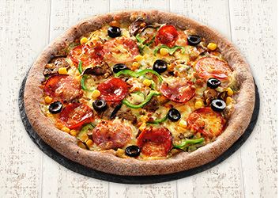

정준형의 자기소개서
1. 소속과 학번,이름은?
저는 소프트웨어 학부이고, 학번은 2018203009, 정준형이라고 합니다.
2. 내가 가장 좋아하는 음식은?
제가 가장 좋아하는 음식은 피자입니다.
3. 내가 가장 좋아하는 영화는?
제가 가장 좋아하는 영화는 어벤져스입니다. 그 중에서도 닥터스트레인지를 가장 좋아합니다.
 영화 예매 사이트
영화 예매 사이트
4. 내가 가장 좋아하는 게임은?
제가 가장 좋아하는 게임은 카트라이더 입니다.
카트라이더 홈페이지.
.
.
.
.
.